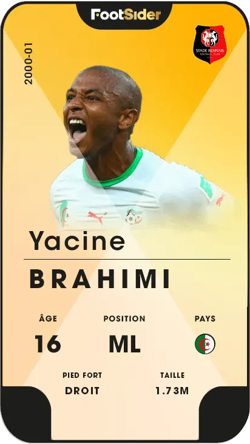

Le réseau social
du football ivoirien
TELECHARGEZ NOTRE APP
Joueurs
Tu es à la recherche d’un nouveau club ? Tu souhaites évoluer dans une équipe de foot de plus haut niveau ?
Avec Footsider, sois visible auprès des clubs !
Complète ton profil, crée ton CV Football, et découvre les opportunités et détections publiées.
Rejoins la communauté Footsider !

Recruteurs
Découvrez et entrez en contact avec des milliers de footballeurs du monde entier en vous inscrivant sur l’application Footsider. Créez des opportunités avec les utilisateurs
En trois étapes simples, vous pourrez créer votre profil club, vous connecter avec des joueurs du monde entier et publier des opportunités concrètes et vérifiées.
Ajoutez les joueurs que vous représentez afin de multiplier leurs chances d’être observé, augmentez vos chances d’agrandir votre portefeuille de joueurs et de trouver la nouvelle pépite du football !


Les Medias parlent de FOOTSIDER
Les Footballeurs parlent de FOOTSIDER
Lancement FOOTSIDER
Qui a créé Footsider ?
L’application Footsider a pour fondateurs Cissé Ahmed et Coulibaly Drissa (Footballeur) partageant des valeurs communes et un seul objectif : Permettre à chaque joueur d’exprimer son potentiel et d’évoluer au plus haut niveau.
Cissé Ahmed
Co-fondateur Footsider
Passionné de football et engagé pour l'égalité des chances et la détection sportive pour tous.
Coulibaly Drissa
Co-fondateur & Footballeur
Footballeur professionnel partageant son expertise du terrain et des filières de recrutement.
Contacter le support
Une question sur votre profil, vos vidéos ou vos détections ? Notre équipe support est disponible pour vous accompagner 7j/7.
Envoyer un message au support